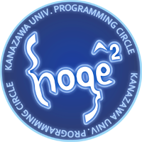

About
理工学域のメンバーを中心とした金沢大学のプログラミングサークル。
プログラミング技能の向上・情報の交換を目的とし、プログラミング/セキュリティ/組み込みアーキテクチャ/ITニュースの分野のホットな話題を肴にギークな食事会を行うことを主活動とする。
KUPCH（クーチ）という名前で活動中。
Activity
| 活動日 | いつでも |
| 活動時間 | いつでも |
| 活動場所 | Slack / 満保研究室(2A726) |
Principal Languages
- C++ 14
- Java 7 (ADT準拠)
- Scala 2.11.x
- Haskell (GHC 7.8.x)
- Python 3.x
- Ruby 2.x
- Go 1.3.x

Practice
「理系のくせに、プログラミングの話が通じない」という経験をしたことはありませんか？
KUPCHはそういう方々の受け皿として働くプログラミングサークルです。プログラマ同士の交流は勿論のこと、最新の開発ドリブン・開発ツールなどの情報を共有し、サークル内で実験的に使用しながら意見交換することで、プログラミング技能自体を一段上へ高めるための活動をしています。基本的には各個人でやっているプロジェクトを自由に進めてもらう方針ですが、サークルに参加することでチーム開発をすることも容易になりますし、技術的なアドバイスを先輩方からもらうことも可能です。このサークルで最も重要とされる理念は「才能のあるヤツを好き勝手やらせて伸ばす」ことです。このサークルはあくまで互助会的な立ち位置にあり、互いに切磋琢磨しあうことで北陸に眠る才能を社会に羽ばたかせることを至上目的とします。
基本はご飯を食べに行ったり、情報交換したりするだけ
やりたくないことをやるのは社会で働いてからにしてください。サークル活動とはそういうものです。大学生にとって大切なことは、「講義に出ること」「単位をとること」「カロリーを摂取すること」の３つです。ここで人間として最低限必要なコミュニケーション能力を養うだけでなく、逸般人のておくれパケットに対する耐性も身につけましょう。優れたエンジニアの言葉をわかりやすく説明できる能力だけでも社会では意外と重宝されます。最近の技術動向を探るだけでなく、過去問の入手、インターンの話、リクルータとの会合の機会にも活用できるため、おいしいお店を見つけたらサークル活動用に目をつけておいてください。
「動くものは正義である」という精神
当然ですがプログラミングもします。勉強会で成果を発表することもありますし、研究の補助をする話が舞い込むこともあります。まずはプログラムを書きまくってください。動いたときの感動を大切にしてください。そして、自分一人で完結するのではなく、コードにコメントをきちんと付けた上で誰かに読んでもらうことが大切です。もし、横暴な先輩に「なんだこの糞コードは！」と罵声を浴びせられた場合は、培ったプログラミング技能を駆使し、某匿名掲示板にあることないことポストするスクリプトを書いて[検閲]になるまで追い込みましょう。相手が大学を[検閲]る頃には、PythonやRubyといったLLの素晴らしさにも気が付いているはずです。
より先進的な開発環境
基本はgitでコードを管理し、CI（継続的インテグレーション)やTDD（テスト駆動開発）／BDD（ビヘイビア駆動開発）といったスタイルを学んでいってもらいます。GitHub Student Developer Pack や Dreamspark などを活用しながら、最新のツールや環境をいつでも使ってみるクセをつけるようにしてください。もちろん必要性が感じられなければ、使い続ける必要はありません。大切なことは使えるツールなのか使えないツールなのかを見極める能力をつけることです。「もっと楽に開発できる環境」を一緒に探して行きましょう。
競技コーディングや各種コンテストも
とにかく技術を磨くという意味では、これ以上に活用できるものもありません。サークル内ではTopCoder、AOJ、AtCoderなどの問題を解いている人が多いです。セキュリティの知識が必要となるSECCONや各種ハッカソンだけでなく、競技コーディングの大会にもサークルとして参加していきたいと考えています。当然、優勝を狙って行きたいとは思っていますが、ボコボコにされるのも良い経験になりますので大学生の内にたくさん挑戦をしてみることが大切です。
ハードウェアにも更に詳しく
金沢大学の講義はハードウェアの分野に内容が偏っていますが、その知識を埋もれさせておくことは非常に惜しいと考えています。プログラミングは当然のことながら、電子工作、ハードウェアハック、ベアメタルレベルでのプログラミングからFPGAによるCPUの自作まで、エンジニアとして幅広い教養を身につけてください。また、電子回路のケースが作れる程度の工作技術があるとなお良いです。北陸ARM U.G. 勉強会などもしていますので、サークル員だけでなく興味のある方は奮ってご参加ください。
Content
準備中
Q&A
インターンシップ先
- NTTコミュニケーションズ株式会社
- 株式会社アックス
- 株式会社CRI・ミドルウェア(CRIWARE)
- 奈良先端科学技術大学院大学(NAIST)
- 富士通株式会社
- 理化学研究所 発生・再生科学総合研究センター(理研CDB)
就職先
- NTTコミュニケーションズ株式会社
Q. 女子です
A. サークルクラッシュしないように。
Q. 男子です
A. 取り巻きの人じゃないよね……？
Q. ぼっちです
A. 採用。
Q. コミュ障ですけど、大丈夫ですか？
A. それが聞けるなら、お前は俺より軽度だよ。
Q. (☝ ՞ਊ ՞) ☝ウイーン
A. やはりEjectは偉大だった。
Q. ご飯食べてるだけで質を保てるの？
A. 知識がないと会話がかみ合わないから、ご飯を食べているだけでサークルの淘汰は起こる。あと、プログラミングはしろ。
Q. サーバくれ
A. VPSやるので連絡しろ。ただ、個人で借りてもたいした値段じゃないから、バイトを教えたほうが有益かもしれない。
Q. 就職斡旋しろ
A. 技能があればレコメンドはできる。
Q. みんなが全然手伝ってくれない！ 手が足りない！！
A. 手伝ってくれないのは頼み方が悪いから。手が足りないのは能力以上のことをやってるから。少なくとも、人望がないのはお前の落ち度。
Q. プログラミング初心者ですけど、大丈夫ですか！！
A. 上の説明は読んだか？ 上の説明を読んだ上でサークルにまだ入りたいと思ってるやつは、既に初心者ではない可能性あるよ。
Q. 彼女欲しいです！
A. 二次元で満足しろ。三次元は他のサークルへ。
Q. やっぱり彼女欲しいです！
A. 生命情報コースを志望しよう。神の御業に挑戦だ！
Q. なんで白鳥の全身タイツが？ あとメイド服の人
A. 入部したらお前もその一味だからな。すね毛は剃ったほうが良いらしいよ。
Q. 留年しました……
A. お前の貴重な才能を、大学が必要としているのさ……。